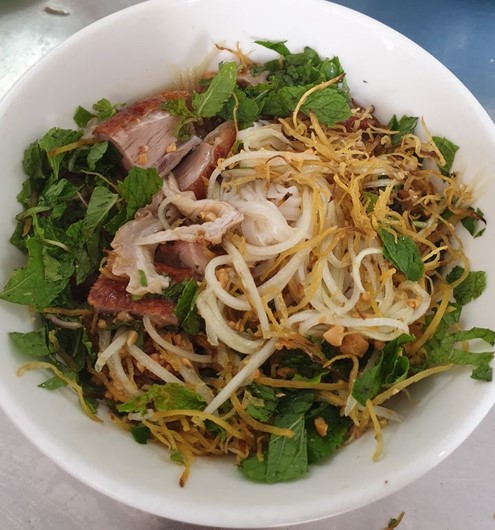
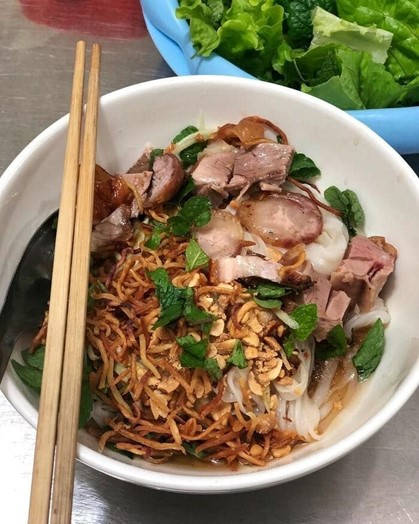
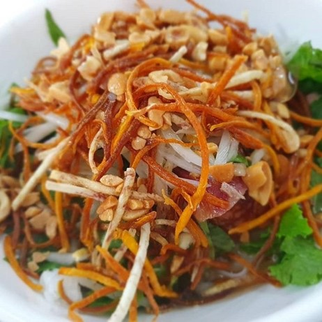
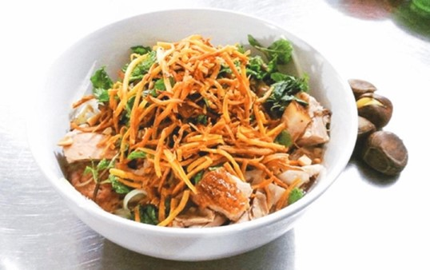
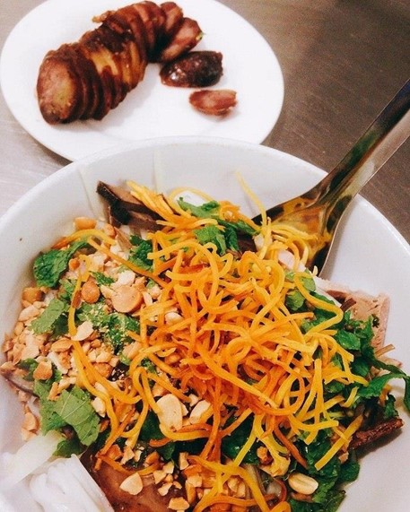

Phở chua
Nếu từng được hỏi về một trong những món ăn nhất định phải thử khi đến Cao Bằng, phở chua chắc chắn nằm trong top đầu của danh sách.
Hương vị thơm lừng của miếng vịt quay hay thịt ba chỉ chiên nóng hổi hòa cùng vị chua ngọt của nước sốt và dẻo thơm từ bánh phở, món ăn này có thể gây thương nhớ cho bất kỳ du khách nào từng nếm thử.
Món ăn được đặt tên là phở chua chủ yếu do phần nước sốt ăn cùng có vị chua ngọt, được kết hợp từ giấm và một số gia vị khác như đường, nước mắm...
Cũng công phu như nồi nước dùng của phở bò, việc chế biến phở chua đòi hỏi nhiều công đoạn khá cầu kỳ. Đầu tiên thành phần không thể thiếu của phở chua là bánh phở - những sợi phở được làm thủ công từ gạo Cao Bằng dẻo ngọt sẽ đem lại hương vị đặc biệt. Bánh phở sau khi được tráng xong để nguội sẽ có độ dẻo và dai, không nát.
Phần nguyên liệu ăn kèm bao gồm thịt ba chỉ được tẩm ướp vừa miệng, chiên vàng ươm. Vịt phải chọn những con béo tốt, bụng vịt được nhồi các loại gia vị như lá hoặc quả mắc mật, hạt dổi... rồi khâu lại, xoa thêm lớp mật ong lên da rồi đem quay.
Nguyên liệu bổ trợ nhưng không thể thiếu tiếp theo đó là miến dong, gan lợn thái mỏng, dạ dày lợn, tất cả đều sẽ được chiên rán dậy mùi đầy hấp dẫn. Ngoài ra, một bát phở chua chuẩn vị Cao Bằng còn có khoai tàu - một loại khoai được trồng nhiều ở các tỉnh như Cao Bằng, Bắc Kạn. Khoai được thái chỉ và chiên qua mỡ sao cho thật vàng giòn.
Cuối cùng nhưng không kém phần quan trọng chính là “linh hồn” của món ăn - phần nước sốt chua ngọt. Nguyên liệu chính để làm ra nước sốt chính là giấm.
Phần nước vịt quay cùng lá mắc mật sẽ được sử dụng để hòa cùng giấm, nước mắm, đường… thêm chút hành tỏi phi thơm lừng, sên lại thành hỗn hợp có vị chua ngọt vừa ăn và độ sánh nhất định. Một tô phở chua có ngon hay không, phần lớn phụ thuộc vào nước sốt “thần thánh” này.
Khi phục vụ thực khách, người bán sẽ cho tất cả các nguyên liệu trên vào tô lớn, sau đó rưới nước sốt lên, thêm ít đậu phộng rang để tăng phần hấp dẫn. Phở chua có thể ăn kèm các loại rau sống như rau muống, húng quế, kinh giới…
Tất cả được trộn đều, tạo nên một tổ hợp vị dẻo của bánh phở, béo bùi của gan, thịt vịt, thịt ba chỉ… cộng với phần nước sốt chua chua ngọt ngọt giúp món ăn không bị ngấy.
Cùng nhờ hương vị độc đáo và lạ miệng, phở chua đã vượt khỏi phạm vi từ một món ăn chỉ xuất hiện trong các mâm cỗ tiệc trở thành món ăn được bày bán ở nhiều hàng quán trải dọc khắp tỉnh, ra khỏi Cao Bằng và dần xuất hiện tại nhiều địa phương khác, tạo thêm điểm nhấn trong bản đồ ẩm thực miền Bắc.